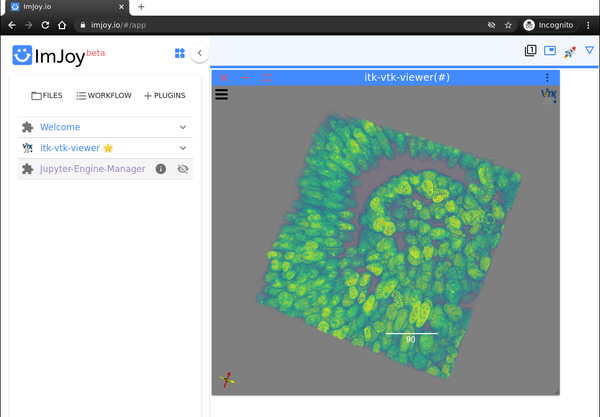
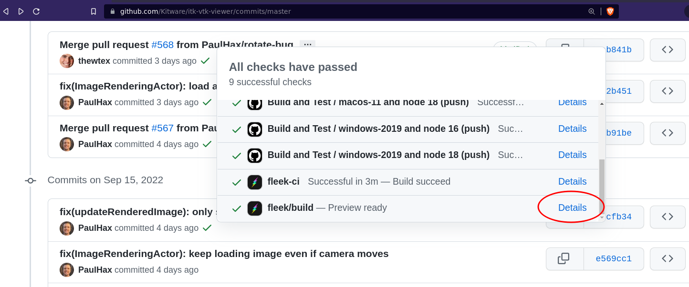

An itk-vtk-viewer plugin is available for ImJoy, a plugin powered hybrid computing platform for deploying deep learning applications such as advanced image analysis tools.

Installation
Install the plugin into the workspace with the following ImJoy Web App or ImJoy Lite App links with the plugin URI:
https://kitware.github.io/itk-vtk-viewer/app/ |
Note that the link can also be used directly.
To install a specific version associated with a specific commit, click the Details link associated with the fleek/build check found in checkmark link popup in the GitHub commit interface.

This results in a URL that contains a root Content Identifier (CID). For example,
https://bafybeihh34vpeoczdl3bu5wff3cvx35g2u3h3cbs6cmc3werg7drobr3ty.on.fleek.co/ |
Inputs
Supported context data inputs:
image: Image to be visualized. Can be:
- An itk-wasm Image
- A scijs ndarray for JavaScript; for Python, it can be a numpy array.
- A URL pointing to an image file supported by itk-wasm.
For scijs ndarray, you can use the following function to encoded it into an imjoy-rpc encoded ndarray.
function encodeScijsArray(array){ |
The image key is optional; one can also call setImage() later.
pointSets: An array of pointSet or a single pointSet to be visualized. Can be an array of imjoy-rpc encoded ndarray (as described in image):
The pointSets key is optional; one can also call setPointSets() later.
Context config:
An optional viewer configuration can be passed with the context config. To
retrieve the configuration from an existing viewer, call viewer.getConfig().
Usage in javascript:
const imageArray = ... // itk-wasm Image or imjoy-rpc encoded ndarray |
Usage in Python
from imjoy import api |
Displaying a point cloud in Python:
import numpy as np |
API functions
In addition to the standard setup and run methods, the itk-vtk-viewer plugin exposes the full viewer API.